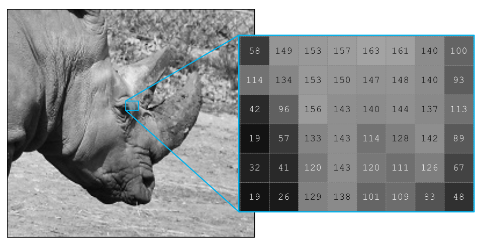
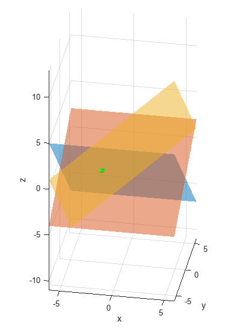
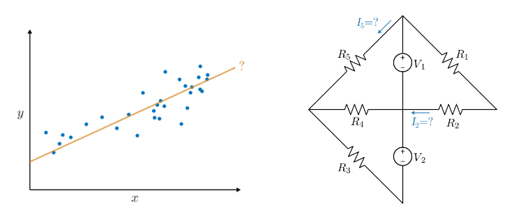
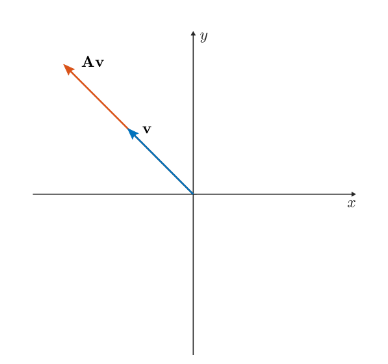
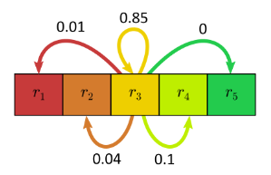

Matrix Methods of Linear Algebra
Information
This curriculum module contains interactive
MATLAB® live scripts
that teach fundamental concepts and basic terminology related to matrix methods commonly taught in introductory
linear algebra courses. In the first part of each live script, students learn standard definitions, visualize
concepts, and perform exercises on paper. Afterward, students practice complementary MATLAB® methods. These
methods reinforce the discussed concepts and help students to develop an early familiarity with computational
software. Each lesson concludes with an illustrative application.
Matrix Methods of Linear Algebra covers
matrix operations, linear systems, and eigenanalysis.
Applications include linear regression, linear circuit analysis, vibrating masses, and Markov chains.
You can use these live scripts as demonstrations in a lecture, class activities,
or interactive assignments outside of class. The module is divided into five live scripts organized by topic: matrix operations, linear systems,
applications of linear systems, eigenanalysis, and applications of eigenanalysis.
The instructions inside the live scripts will guide you through the exercises and activities.
Get started with each live script by running it one section at a time. To stop running the script
or a section midway (for example, when an animation is in progress), use the Stop button in the
RUN section of the Live Editor tab in the MATLAB Toolstrip.
If you find an issue or have a suggestion, email the MathWorks online teaching team at
onlineteaching@mathworks.com.
Related Courseware Modules

Getting Started
 Add-Ons > Get Add-Ons.
Add-Ons > Get Add-Ons.
Products
MATLAB® is used throughout. Tools from the Symbolic Math Toolbox™ are used in
matrixOperations.mlx, linearSystems.mlx,
eigenanalysis.mlx, and eigenanalysisApplications.mlx.
Tools from the Image Processing Toolbox™ are used in matrixOperations.mlx.
Tools from the Statistics and Machine Learning Toolbox™ are used in
linearSystemsApplications.mlx.
Scripts
Organization of the Matrix Methods of Linear Algebra Module
Topic
In this script, students will...
Matrix Operations

Linear Systems

Linear Systems Applications

Eigenanalysis

Eigenanalysis Applications

Copyright 2021-2022 The MathWorks™, Inc.